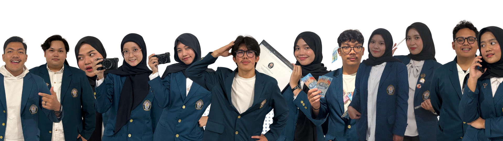

📖 KKN-T TIM 26 KELOMPOK 3 📖
Penggerak edukasi kesehatan gigi untuk masyarakat Kelurahan Padangsari
👩💻 Tentang Tim
Kami adalah mahasiswa Universitas Diponegoro yang tergabung dalam program KKN-T TIM 26 KELOMPOK 3. Dengan semangat kolaborasi dan pengabdian, kami mengembangkan GigiPintar untuk meningkatkan kesadaran masyarakat, khususnya anak-anak, akan pentingnya menjaga kesehatan gigi dan mulut.
👨👩👧👦 Anggota Tim

📍 Lokasi Kegiatan
RW 03 Kelurahan Padangsari, Kecamatan Banyumanik, Kota Semarang, Jawa Tengah.